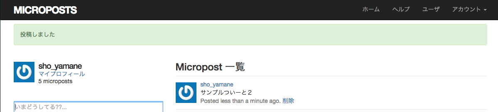

カリキュラムLesson4"ポートフォリオ"の作成課題です。
このページはGitHub Pagesのアカウントページで私が作ったものを紹介するページです。
カリキュラムLesson6"メッセージボード"の作成課題です。
Railsの基本的な機能を使い、ユーザーは名前と内容を送信するとデータベースに保存し、
伝言が残せるアプリケーションです
カリキュラムLesson7"Twitterクローン"の作成課題です
本格的なWebアプリケーションとしてTwitterのようにステータスを更新してFriendなどと共有するアプリケーションです
